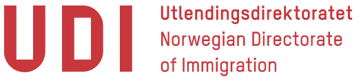
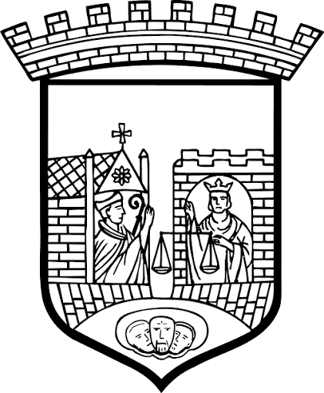
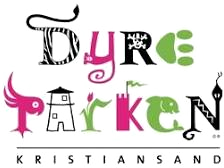

Sensei-mentorskap
Ledere lærer raskere gjennom utfordring og dialog med en erfaren sensei-mentor.
Les merSensei-mentoring, praktisk opplæring og e-læring i Lean og systemtenkning, for ledere og team i bedrifter og kommuner.
I en kompleks verden i rask endring er det organisasjonene som lærer sammen, som lykkes. Vi hjelper ledere å bygge ekte lærende organisasjoner: steder der folk ser hele systemet, lærer ved å gjøre og leder gjennom dialog.

Fem måter å jobbe med oss på, fra én samtale til en hel transformasjon.
Ledere lærer raskere gjennom utfordring og dialog med en erfaren sensei-mentor.
Les mer


E-bøker, e-kurs og webinarer som er rimelige, tilgjengelige døgnet rundt og kan tilpasses din organisasjon.
Les mer
Coaching og et videobibliotek for å bygge en kultur der alle lærer og forbedrer hver dag.
Les merHver bok har gratis kapittelnotater, maler, videoer og nedlastinger.
Alle bøker og ressurserILO vokste ut av Senter for totalkvalitetsledelse i Norge. Våre to faste eksperter hjelper medarbeidere og ledere å bli systemtenkere gjennom mentorskap, opplæring hos dere og e-læring.

Mer enn 30 år innen kvalitetsledelse og Lean, blant annet som kvalitets- og innovasjonssjef i Hydro Agri Europe (nå Yara). Han har skrevet 7 fagbøker og er en av grunnleggerne av LOS Norge, foreningen for lærende organisasjoner i Norge.
Les hele presentasjonen →
Spesialist i transformasjon av læringskultur. Samer arbeider sammen med Bjarne med ILOs mentorskap, opplæring og seminarer, og hjelper organisasjoner å bygge en kultur der alle lærer og forbedrer.
Les hele presentasjonen →Sitat fra kunde kommer: to eller tre setninger om hva som endret seg etter samarbeidet med ILO.
Sitat fra kunde kommer: to eller tre setninger om hva som endret seg etter samarbeidet med ILO.
Sitat fra kunde kommer: to eller tre setninger om hva som endret seg etter samarbeidet med ILO.
Ledende norske virksomheter har brukt oss







Fortell oss hvor dere står i dag, så foreslår vi neste steg for teamet ditt.
eller kontakt oss direkte: gabi@learnorg.global · +47 48 28 70 00